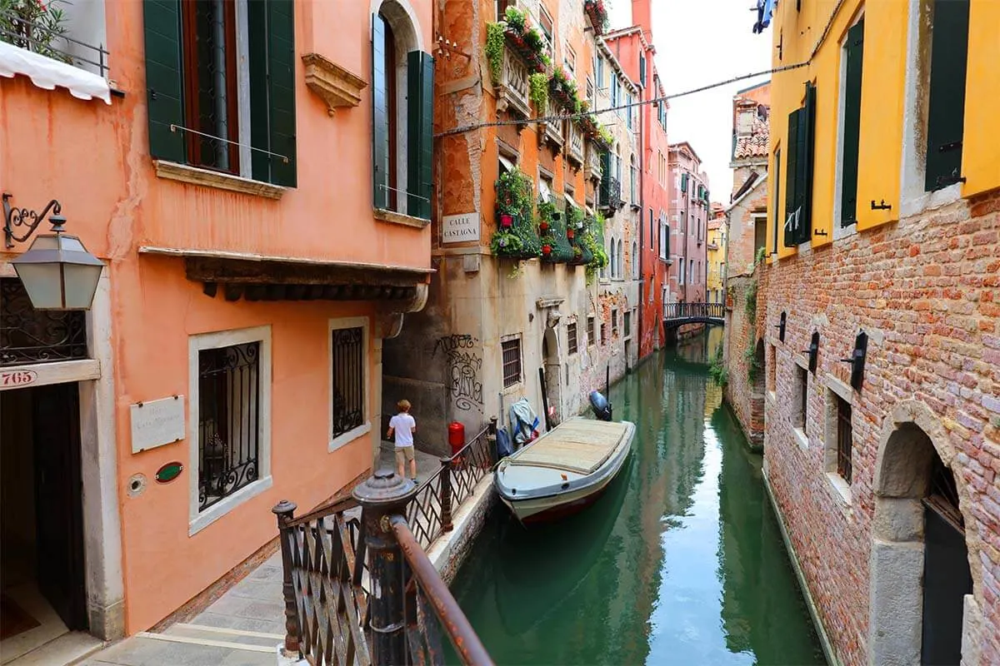
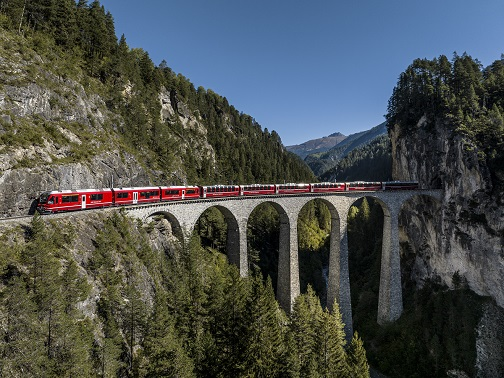
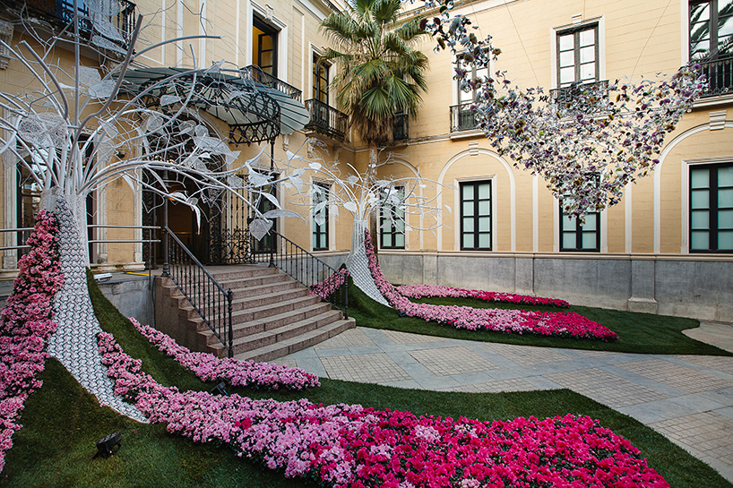
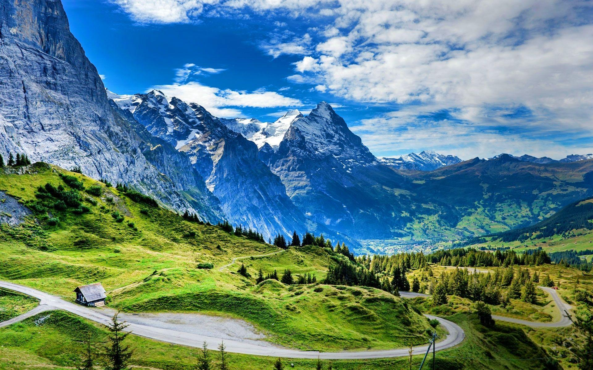
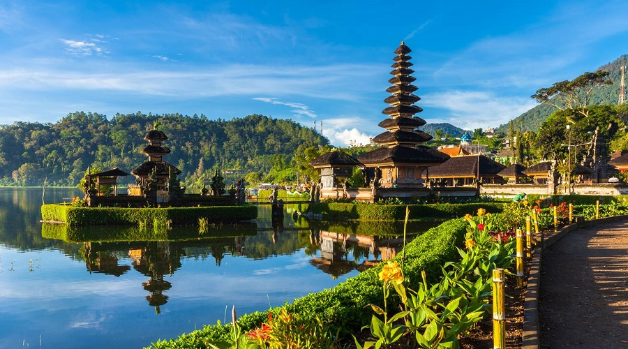
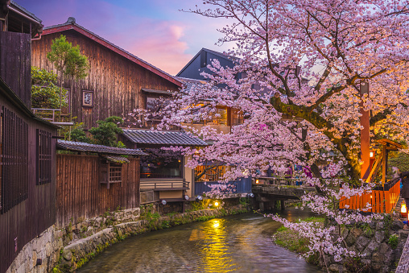
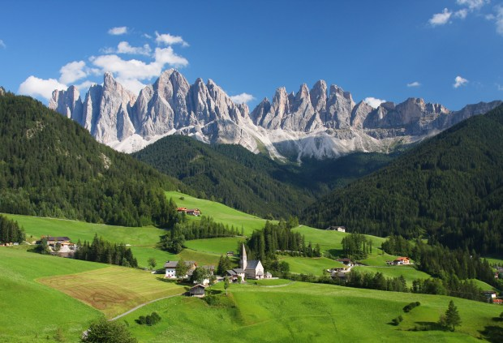

Venice, often described as a floating masterpiece, is a city of stunning beauty where history, art, and water intertwine. Picture narrow, winding canals glistening under the sunlight, lined by centuries-old palaces with their pastel façades reflecting on the shimmering waters.
Venice has a humid subtropical climate characterized by warm, humid summers and mild, damp winters. Summer temperatures range from 25°C to 30°C (77°F to 86°F), attracting many tourists, while autumn sees milder temperatures of 20°C (68°F) in September to about 10°C (50°F) in November, with increased rainfall leading to occasional flooding (acqua alta). Winters are mild, averaging 3°C to 8°C (37°F to 46°F), with fog and dampness common, though snowfall is rare. Spring brings rising temperatures from about 10°C (50°F) in March to 20°C (68°F) in May, along with pleasant weather as flowers bloom. The best times to visit are in spring (April to June) and early autumn (September to October) for mild weather and vibrant activities, while winter offers a quieter experience with fewer crowds.

The city's skyline is punctuated by the soaring domes of St. Mark's Basilica, their golden mosaics shining like a beacon of Byzantine grandeur, evoking an air of timeless splendor.
As you stroll through Piazza San Marco, the expansive square opens up before you, framed by grand, arched colonnades. The air is filled with the echoes of history, as the Campanile towers above, watching over the lively throng of tourists, musicians, and pigeons that give the square its characteristic vibrancy.
Crossing the Rialto Bridge, the Grand Canal unfolds in all its glory, a liquid avenue bustling with boats and gondolas. The water's gentle ripples mirror the Venetian skyline, casting a soft glow on the buildings that have stood for centuries, giving visitors a sense of stepping into a living painting.
Venice's beauty is not just visual but also cultural — a city where every corner tells a story of art, commerce, and tradition. The cobblestone streets lead to hidden gems, like local shops and artisanal cafés, while the air carries the scent of fresh Venetian cuisine and the distant hum of water taxis. Venice's allure lies not only in its breathtaking architecture but also in the rich tapestry of life that continues to flourish amidst its historic charm.
Check out our travel blog for more inspiration!
The Rhaetian Railway (RhB) in Switzerland is an iconic narrow-gauge railway network renowned for its scenic routes through the Swiss Alps. Established in 1888, it connects various regions including Graubünden, offering breathtaking journeys over bridges, through tunnels, and across stunning landscapes. The railway is part of UNESCO World Heritage sites and includes popular routes like the Bernina Express and Glacier Express, attracting both tourists and locals.
The climate along the Rhaetian Railway varies due to the altitude changes. In the lowlands, you can experience mild, temperate conditions, while higher altitudes, such as those along the Bernina Pass, can see much colder, alpine weather. Snow is common in winter, making it a picturesque winter destination, while summers are pleasant and ideal for scenic travels.

The Bernina Express route on the Rhaetian Railway is renowned for crossing the Alps without the use of cogwheel assistance, showcasing glacial landscapes, alpine forests, and serene lakes. The Albula Railway line is equally stunning, winding through deep valleys and over 144 bridges, making it a photographer’s dream.
Check out our travel blog for more inspiration!
Girona is a historic city in northeastern Spain, known for its medieval architecture, vibrant culture, and scenic views along the Onyar River. Its key attractions include the Cathedral of Girona, ancient Roman walls, and charming cobblestone streets. Located near both the Pyrenees Mountains and the Costa Brava, Girona offers a mix of history, culture, and natural beauty.
Girona, located in northeastern Spain's Catalonia region, is a historic city known for its well-preserved medieval architecture, charming old town, and scenic river views. The city's highlights include the Cathedral of Girona, which offers stunning views from its steps, and the colorful houses lining the Onyar River. Girona is also famous for its ancient Roman walls, winding cobblestone streets, and vibrant cultural scene. Its proximity to both the Pyrenees Mountains and the Costa Brava makes it a great base for exploring nature, history, and coastal beauty.

Girona, a picturesque city in northeastern Spain, comes alive each May during the Temps de Flors, a vibrant flower festival that transforms its historic center into a stunning floral spectacle. This celebration features breathtaking floral displays throughout the city, adorning landmarks like the Cathedral of Girona and the charming Jewish Quarter (El Call).
The festival highlights include elaborate arrangements along the Cathedral Steps and floating decorations on the Onyar River. With gardens and public spaces opened exclusively for the event, visitors can immerse themselves in a magical atmosphere where nature and art collide. Temps de Flors offers a unique opportunity to experience Girona's rich history and culture in full bloom.
Check out our travel blog for more inspiration!
The Swiss Alps are a stunning mountain range that forms a significant part of Switzerland's landscape, renowned for their breathtaking beauty, charming villages, and world-class outdoor activities. These majestic mountains offer a picturesque backdrop for a range of adventures, from skiing and snowboarding in the winter to hiking, biking, and climbing in the warmer months.

The Swiss Alps are home to some of the most iconic peaks, including Matterhorn, Eiger, and Jungfrau. Visitors flock to Zermatt for unparalleled views of the Matterhorn and access to ski resorts, while the Jungfrau Region offers stunning scenery, hiking trails, and the famous Jungfraujoch railway, which is known as the “Top of Europe.” The region is dotted with beautiful alpine lakes, such as Lake Geneva and Lake Lucerne, which provide opportunities for relaxation and water activities.
Outdoor enthusiasts will find a plethora of activities year-round. In winter, the Swiss Alps become a paradise for skiing, snowboarding, and snowshoeing, with resorts like St. Moritz and Verbier offering excellent facilities. During the summer months, the mountains are perfect for hiking, with well-marked trails that cater to all skill levels. Adventure seekers can also enjoy mountain biking, paragliding, and climbing, all while surrounded by breathtaking vistas of towering peaks and lush valleys.
Check out our travel blog for more inspiration!
Bali, Indonesia, often referred to as the "Island of the Gods," is a popular tourist destination known for its stunning beaches, lush rice terraces, vibrant arts scene, and rich cultural heritage. The island's natural beauty is complemented by its unique traditions, including elaborate ceremonies and traditional dance performances.
Bali has a tropical climate with two distinct seasons: the dry season from April to October and the wet season from November to March. The dry season features warm, sunny days perfect for beach activities and exploring, while the wet season can bring heavy rainfall, particularly in December and January. However, even during the wet season, Bali's lush greenery thrives, creating a vibrant landscape.

The island is famous for its breathtaking beaches, including Kuta, Seminyak, and Uluwatu, where visitors can enjoy surfing, sunbathing, and stunning sunsets. In addition to its beaches, Bali boasts beautiful rice terraces in places like Ubud, where visitors can immerse themselves in the island's serene natural beauty and explore local culture.
Moreover, Bali is rich in cultural experiences, with numerous temples to explore, such as the iconic Uluwatu Temple perched on a cliff overlooking the ocean, and Tanah Lot, known for its stunning sunset views. Traditional Balinese dance performances showcase the island's artistic heritage, and local markets offer unique crafts and souvenirs, making Bali a paradise for culture lovers and adventure seekers alike.
Check out our travel blog for more inspiration!
Kyoto, once the capital of Japan, is a city rich in history and culture, renowned for its stunning temples, traditional wooden houses, and beautiful gardens. Visitors can explore famous landmarks like Kinkaku-ji (the Golden Pavilion), Fushimi Inari Taisha (known for its thousands of vermillion torii gates), and the historic Gion district, where geisha culture thrives.
Kyoto has a humid subtropical climate with four distinct seasons. Summers are hot and humid, with temperatures often exceeding 30°C (86°F), while winters can be cold, with occasional snowfall. The best times to visit are during spring (March to May) when cherry blossoms bloom and in autumn (September to November) when the foliage turns vibrant shades of red and gold.

In addition to its historical attractions, Kyoto offers a vibrant culinary scene, with opportunities to savor traditional Japanese cuisine, including kaiseki dining and matcha tea ceremonies. The city's tranquil gardens and tea houses provide a serene escape from the bustling city, allowing visitors to immerse themselves in the beauty of Japanese culture.
Check out our travel blog for more inspiration!
The Dolomites, located in northern Italy, are a stunning mountain range that form part of the Alps. Renowned for their breathtaking beauty, dramatic peaks, and picturesque valleys, the Dolomites offer a wealth of outdoor activities, including skiing in winter and hiking in summer. The area is a UNESCO World Heritage site, celebrated for its unique geological features and rich biodiversity.
The Dolomites in northeastern Italy experience a varied climate, with warm summers (June to August) and cold, snowy winters (December to February). Summer temperatures can range from 20°C to 30°C (68°F to 86°F), making it ideal for hiking and exploring the region's natural beauty. Winter brings colder temperatures and heavy snowfall, attracting skiers and snowboarders to the numerous resorts.

With its breathtaking landscapes, charming villages, and rich cultural heritage, the Dolomites are a paradise for nature lovers and outdoor enthusiasts. The region boasts picturesque towns like Cortina d'Ampezzo and Ortisei, which serve as gateways to exploring the surrounding mountains and valleys.
Visitors can indulge in local cuisine, including hearty mountain dishes, and enjoy traditional festivals that celebrate the unique culture of the Dolomites. Whether hiking through scenic trails, skiing on pristine slopes, or simply taking in the stunning views, the Dolomites offer an unforgettable experience for travelers seeking adventure and natural beauty.
Check out our travel blog for more inspiration!